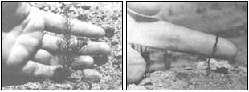
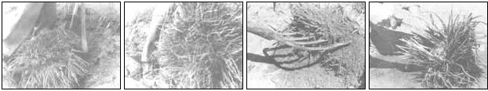
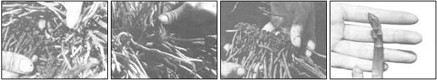

There's one good reason not to transplant asparagus: It's a lot of work! However, it's also the only way to get full production in the first spring following planting.
My original asparagus patch, for example, was started with two-year-old commercial plants. But five years later, I transplanted some ten-year-old crowns from a neighbor's garden, and when spring rolled around, these transplants-in spite of having been recently moved-actually outproduced the younger (seven years old), established plants. What's more, they were free for the digging.
But (naturally!) there is one catch: If you don't know just how to handle the scavenged plants, your only reward will be improved muscle tone from all the additional gardening exercise. And should you consult the "experts" for advice, most of them will simply tell you that it's easier to buy new plants.
Well, of course it's easier, but you may have more energy than money ... you may not want to wait several years for the payoff ... or your present patch may have become overcrowded and so unproductive that it won't satisfy your family's appetite for this delicious, healthful spring crop. (Just 100 grams of asparagus contains 2.2 grams of protein and at least 900 units of vitamin A and beta-carotene, a component that many people feel has great potential as a cancer preventive.)'
FINDING TRANSPLANT
CANDIDATES
If you don't have a crowded "sparrowgrass" patch of your own to raid for transplants, you'll have to search one out. Fortunately, this perennial is quite hardy, and will live for years on abandoned homesteads. When such a site has enough rainfall to nurture old fruit trees, any asparagus that's been planted has probably survived as well. (Remember, even abandoned farms belong to someone, so seek out permission be fore you start digging.)
In drier parts of the country, "wild" asparagus, which is simply the wayward offspring of the garden plant, is sometimes found along streams and irrigation banks. Neighbors' plots can often provide sources of transplants, too. Although a properly tended bed can be productive for up to 50 years, it will become overcrowded long before that. In fact, if an old plot is dug up and the plants are divided, it will supply enough crowns to plant an area larger than the original patch, and-as a bonus-that same space will actually produce more edible shoots after it's been thinned. Therefore, one of the best ways to get plants of known quality is to exchange the time and labor spent thinning and replanting another gardener's patch for a share of the extra plants. Take heed, though ... you might wind up with more asparagus than you know what to do with. I once dug up an 18-inch-diameter clump that yielded more than 250 plants (at least we found out why it wasn't bearing!).
Asparagus can be transplanted at any time during its dormant period, as long as the ground isn't frozen. And while many people like to undertake this task in the early spring, I've found that this causes the bearing season to be a bit delayed, at least as compared with that of those transplanted in the fall.
Actually, having the right tools (and using them carefully) will have a lot more to do with your success than will your decision as to whether to transplant in spring or autumn. You'll need a shovel or spade, a garden fork, and a mattock. (If you don't have a garden fork, you can make do with a shovel, but-since you'll have to take a good bit of extra care not to bruise or to cut the roots' tender tissue-using a shovel alone makes a long job seem downright endless. In addition, because a fork will allow some dirt to slip through its tines, that tool will be easier on your back.) A crowbar may also come it handy for loosening the larger clumps and-in anything but extremely sandy soil-a garden hose is useful during the final root-tracing-and-dividing process.
GET 'EM UP
When you've found your source of transplants, don't just start in shoveling, or you're apt to cut the roots badly. Instead work on one clump at a time, and begin by inspecting the dead foliage from the previous year to determine the exact location o the crowns. These will be concentrate( among the clusters of dried seed stalks, an( must be treated with care. (After all, it's the crowns that will send up edible spears the following spring.)
Working carefully, use the spading fork to "explore" a circle of ground that extends 6 to 12 inches from the outer edge of the group of dead stems. After you've determined how far the main mass of the root system reaches, you can use the shovel to dig a circle around it. This trench should generally be about one spade's depth, but it's best to check to see how deep the root structure goes and to dig accordingly.
You'll have to continue working around the mass until you start to tunnel under the root system. You might as well accept the fact, however, that you won't be able to get it all out intact. Rather, the object is to save as much of the "fat" root system as possible, because it contains the stored food that will help insure the plant's survival. Many of the small, hairlike feeder roots will likely be accidentally stripped during the digging/ transplanting process, but the plant can replace some of these without suffering too much harm.
If the clump is relatively small, you might be able to loosen and lift it with the spading fork. An older mass, however, will often have to be pried out with the mattock ... and a really large and/or overcrowded section may require a mattock, a crowbar, and all of the ingenuity you can muster. But whatever tool(s) you're using, make sure that you work the implement under the roots instead of cutting through them or-worse still-slicing into the crowns. Once the tool is in place under the root mass, move around the trench-prying gently at a number of points-until the clump can be lifted out whole.
Sometimes the plants in an old bed may be too closely intertwined to remove by simple circling and lifting. In that case, your best bet will be to start at the end of a row or the corner of a bed, and use the spading fork, as before, to locate the edges of the tangled root clumps. Then, to find the dividing line between the intersecting roots of two adjacent systems, insert the fork-from the side-at a point about halfway between the clumps' suspected centers and lift gently. If you've found the right spot, the ground will break above the tines as the two root masses pull apart. When you meet resistance, move a bit to one side and try again ... always working from the edge toward the center, and inserting the tool gently to avoid damaging any roots. If you meet no resistance when prying, move in closer and try again.
DIVIDE THE SPOILS
(WITHOUT SPOILING THEM)
When the asparagus is finally out of the ground, you can begin to evaluate your prizes. If the soil is sandy, most of it will have fallen from the roots by this point ... but clay may hang on and will have to be washed off before the untangling job can begin. (A gentle hosing will remove the dirt and cause less damage than would trying to shake or claw the earth off.)
A mature plant will have a large, healthy crown with, perhaps, some smaller crowns loosely connected to it. The roots will be large, too, but not tightly packed. When you're fortunate enough to find an asparagus of this type, all you'll have to do is pull away the extra plants before transferring it to its new home.
An overcrowded clump is- altogether another story, though. It will likely be a real mess, with a lot of stunted plants jammed tightly together. The roots of one may even grow through the crown of another. In such a case, the transplanter pretty much has to settle for a salvage operation. When you can't save all of the plants, you have to try for the best and sacrifice the rest.
PREPARING A NEW HOME
When your asparagus roots are cleared and separated, you'll have to determine where to put them. (I'm sure that the plan-ahead types reading this will wonder why this point wasn't brought up before ... but there's no way to know how many plants you'll have to relocate until you actually dig them up!)
The commonly quoted rule of thumb says that you'll want at least a half-dozen plants for each member of your family. (However, I think a full dozen apiece would be closer to the truth.) Your needs will vary, of course, according to how much your clan likes asparagus. Then again, if you want to preserve some, it's best to plant extra ... and hope that the to-be- saved-for-later spears don't end up on the spring luncheon menu.
In choosing a suitable place to plant, remember that you may well be picking from that location for the next couple of decades. Since asparagus will grow in almost any kind of soil, though, the only type of plot you'll have to avoid is one that retains excessive moisture.
It's best to allow from 18 to 30 inches between plants in each row, and from 3 to 5 feet between rows. If your planting area is limited, you might try placing the root clumps at the corners of equilateral triangles with 18-inch sides ... but don't plant them any closer together than that, unless you want to redo the whole thing in a couple of years!
If you're concerned about your asparagus taking up too much of your garden plot, you can use the open spaces between your root clumps to grow annual vegetables for a few years. (Carrots, turnips, spinach, radishes, beets, and kohlrabi are good choices for this.) Just don't place these "guests" so close that they interfere with the development of the permanent crop, because asparagus has to have a lot of breathing room. Always keep in mind that while this perennial can easily become crowded, there's no way you can get its shoots too far apart, because they don't require cross-pollination. Individual asparagus plants can even be scattered throughout an orchard or in flowerbeds.
If you want to plant the roots in groups, dig an 18- to 24-inch-deep bed. Otherwise, just prepare individual holes. Next, spread about 6 inches of well-rotted manure or compost in the bottom of the hole/trench/ bed, and cover it with a layer of dirt. The thickness of this soil layer will, of course, depend upon the size of the root system ... but be sure to make the final level of the ground about 3 inches above the asparagus crowns. (Small plants may have only a few thin roots to be arranged horizontally on top of a thick layer of soil. A mature one, however, may have a 6-inch root mass extending down from its crown.)
Once the plant is placed in the depression, sift earth over it gently, keeping the roots spread out widely ... pack this soil down firmly but carefully ... then water the asparagus ... and wait. (If you plant in the fall, it's best to cover the crop with leaves or litter, which you should remove in the spring.)
KEEP 'EM HAPPY
By moving older plants, you can bypass the early, unproductive years and enjoy a full harvest the following spring. However, you'll also have to watch for overcrowding much sooner than you would with a "new" bed. If the spears start getting smaller with the passing years, the clumps should probably be divided once again. For the most part, asparagus does an excellent rob of taking care of itself, although it will appreciate water during dry periods ... as well as an occasional top-dressing of manure when the plants are dormant. (You should also keep the ground loose around the young shoots at all times, and cultivate to a depth of I inch to keep down the weeds.)
HARVESTING HINTS
And just how will you know when your asparagus is ready to harvest? Well, surprisingly enough, the plants themselves will tell you. Seedlings put up only fernlike leaf stalks, you see, while a yearling patch may produce tiny spears. (The thin ones--smaller around than a pencil-are certainly edible, but they may be a bit stringy.) When you decide that your shoots are big enough for eating, be aware that careless cutting can injure or destroy undeveloped spears that are still below the ground. One good way to harvest is simply to snap off the stalks by bending them across your index finger with your thumb. In addition, don't ever cut the mature leaf stalks until after the first frost, as they perform the photosynthesis that gives this wonderful vegetable the strength to feed you year after year.
|
LEFT: An asparagus seedling will produce only leaves. It may come up in an established bed ... or in the most unpredictable places! RIGHT. A yearling plant may develop a tiny spear, but it quickly opens and-at that point is no longer worth harvesting. |
 [1] A mattock can be used to pry up an asparagus clump by inserting the blade beneath the plant's root system. [2] When this clump was divided, it produced 250 plants! [3] A spading fork makes the transplanting procedure easier on a gardener' back. [4] Washing away the dirt will help you see how to untangle individual plants from a clump. |
 [1] The young plant on the right has round, firm roots (although a few are stunted from lack of growing space), while the roots of the ""mother plant"" (second from right [3]) are limp and exhausted. [2] Each plant you move should have a healthy crown like the one shown here, if you want it to produce edible spears when spring arrives. [4] The crowns of this asparagus are spent, but it still has some healthy roots. If planted, it will produce small, new shoots, but it will be several years be fore it yields any eating sized spears. |
|
 |
|
|